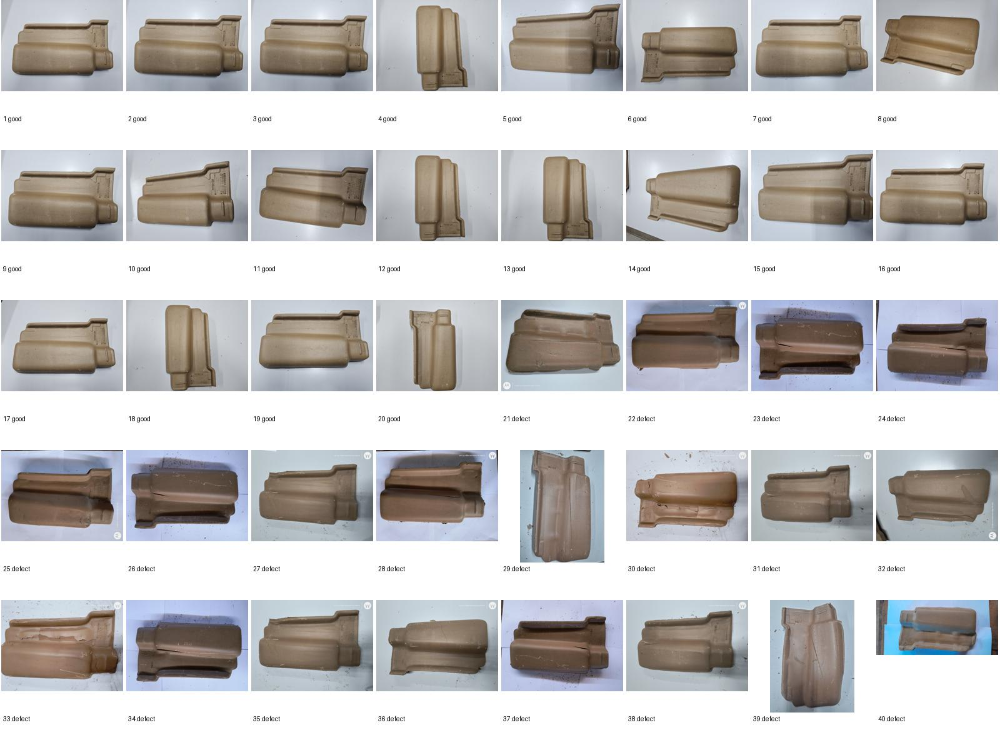
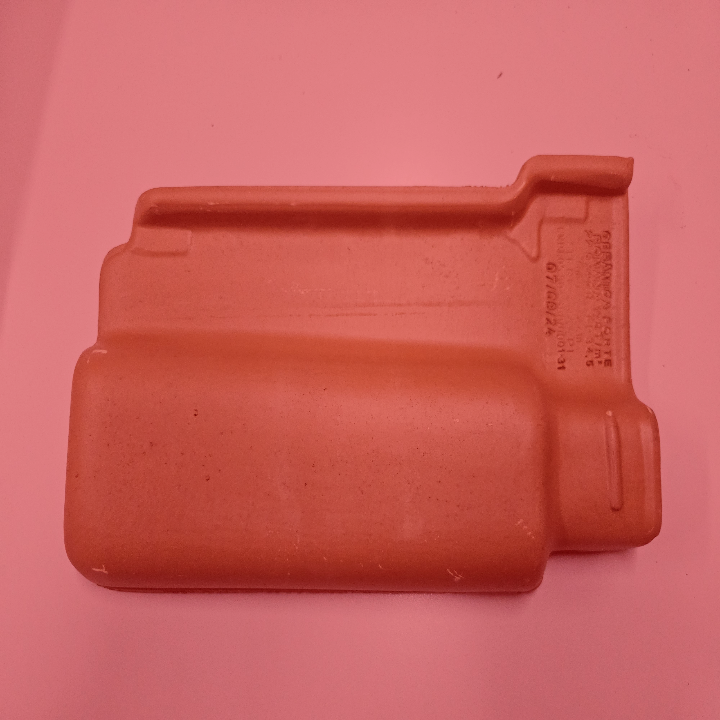
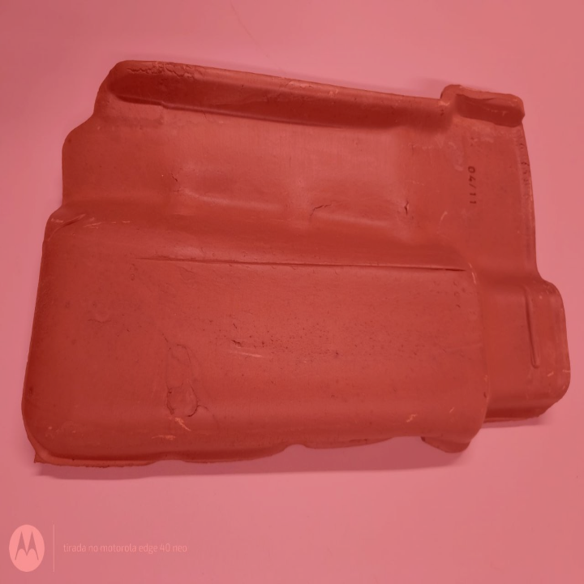
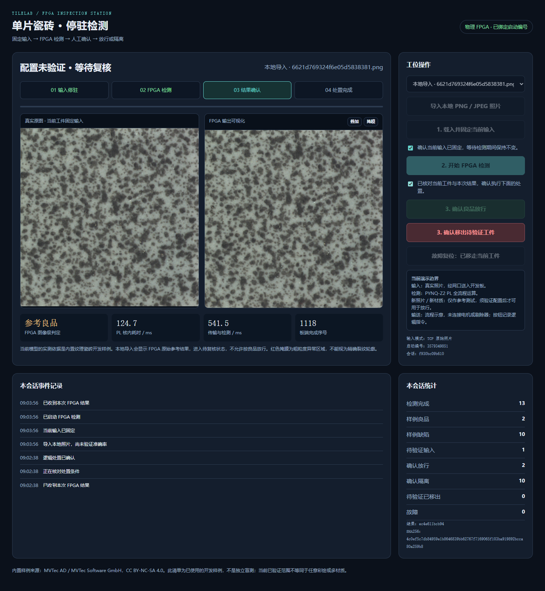

40张新来源原图：20张缺陷检出，但20张良品也全部误报。原模型、阈值、硬件均未改变。该结果完整保留，没有通过调整阈值、筛掉失败图片或修改标签制造成功。
当前工作站已恢复：停驻检测界面。未验证导入只能显示参考结果和移出，不能按良品放行。此规则是操作联锁，不是算法准确率提升。
40张新来源原图：20张缺陷检出，但20张良品也全部误报。原模型、阈值、硬件均未改变。该结果完整保留，没有通过调整阈值、筛掉失败图片或修改标签制造成功。
当前工作站已恢复：停驻检测界面。未验证导入只能显示参考结果和移出，不能按良品放行。此规则是操作联锁，不是算法准确率提升。
| 数据与目的 | 结果 | 能说明什么 |
|---|---|---|
| 原有117张纹理开发图回归 | 117/117判对；全部评分/掩膜逐值一致 | 稳定硬件没有回退；不是独立盲测 |
| 外部陶瓦40张 | TP20、FP20、TN0、FN0 | 当前纹理配置不适用于该新材质/场景 |
| 选定两张实际HDMI采集帧 | 离线参考评分误差0，掩膜差异0 | 硬件计算正确不等于分类适用 |
| 工作站12样例流程复测 | 12/12通过，34次无效操作被拒绝 | 已验证样例流程保留 |
| 新增范围联锁 | 13项软件测试；4项实际FPGA界面检查通过 | 未验证的原始良品结果也不能转成放行 |
作者发布页提供正常/缺陷原图与增强目录。本轮只取原图测试目录，按固定哈希顺序预先选择每类20张；与原347张的文件哈希无交集。查看实际照片后确认是陶瓦，且作者提示实体样本数量有限，因此不能把它称作新的地砖盲测，也不能把40张当成40个独立工件。

缩略图仅用于核查与展示；原图未编辑。原始尺寸960x1280至4096x3072，经过整图HDMI显示缩放后由PL采集720x720ROI。显示缩放可能损失细小缺陷，不能声称原始高分辨率无损验收。
来源标为良品，但当前模型报警。

缺陷输入报警；不能据此掩盖良品误报。

良品峰值24458-27454，缺陷峰值24214-26770，冻结阈值10908。当前这两组峰值有重叠，仅改一个阈值不能同时做到本批零误报和全检出。这是事后诊断，没有选择或部署新阈值。
内置开发样例的验证范围绑定到当前模型SHA256。新导入照片保留FPGA原始评分和报警位，但进入“配置未验证-等待复核”；即使原始报警位为0，也不能良品放行。浏览器不能通过提交字段提升资格，换模型后旧资格无效。未验证移出单独计数，不算确认良品或确认缺陷。

当前没有实体传送带或执行器，所有放行/隔离/移出均是逻辑工作流。CPU只管理输入、流程、显示和离线核对，全部检测运算仍在PL。
优先补目标花色的良品参照标定，再使用未参与标定的真实良品及缺陷验证。当前不宣称任意彩绘、多材质能力，也不把10FPS作为这一阶段的前置条件。需继续完善报告和视频，并补真实整机/板卡照片与本人签署的官方授权书。
更新后的技术报告底稿 · 40张全部原始评分 · 检测前冻结的清单 · 事后诊断 · 证据哈希